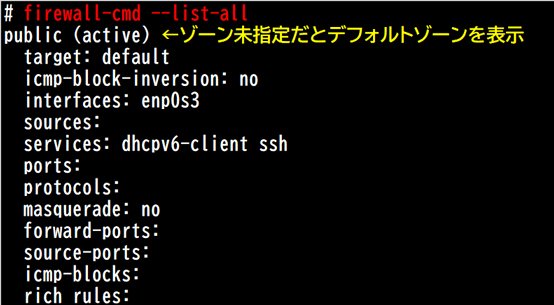
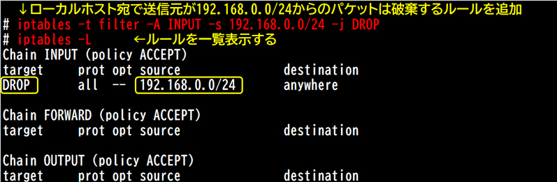
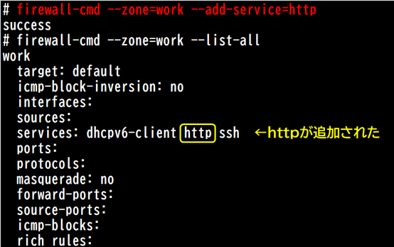
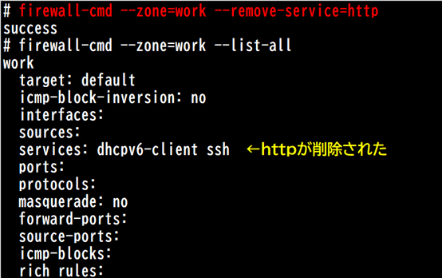
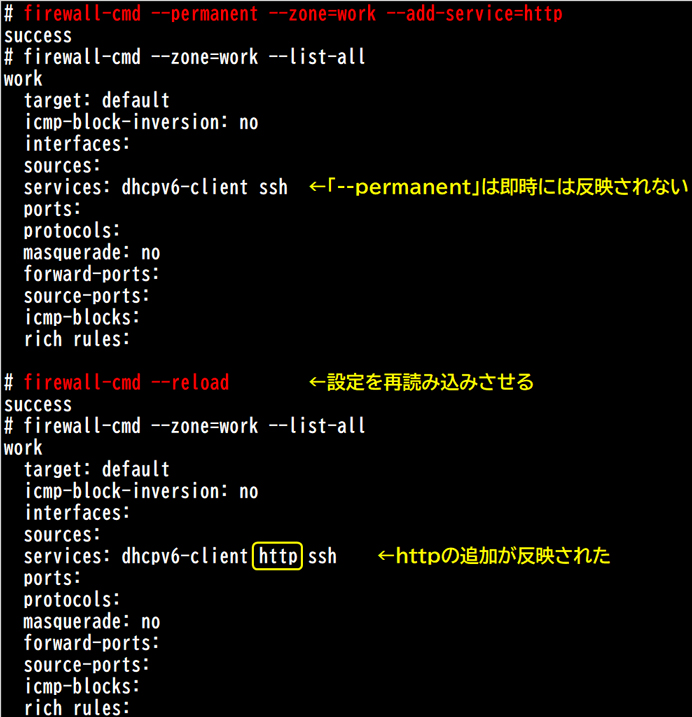

- 問題ID : 15847 ホストのセキュリティ設定
- 履歴
firewall-cmdコマンドで、指定したゾーンの設定を確認するオプションはどれか。
正解
--list-all
解説
firewall-cmdコマンドでゾーンの設定を確認する場合の書式は、以下のとおりです。
firewall-cmd [--zone=ゾーン] --list-all
したがって正解は
・--list-all
です。
以下は実行例です。

「--zone=ゾーン」を指定しない場合は、デフォルトのゾーン（初期値はpublic）についての操作になります。
デフォルトのゾーンは「--get-default-zone」オプションで確認できます。
# firewall-cmd --get-default-zone
public
その他の選択肢は全て存在しないオプションです。
参考
ファイアウォールは外部からの攻撃や不正なアクセスを防ぐためのセキュリティ機能です。
ファイアウォールの主要機能のパケットフィルタリングでは、パケットの送信元アドレス、宛先アドレス、ポート番号をチェックし、ルールに従ってパケットの通過を許可、破棄します。アクセスリストと同様の働きをします。
【iptables】
Linuxカーネルにはnetfilterというパケット処理機能が組み込まれています。
iptables（IPv6環境ではip6tables）は、netfilterを利用してパケットフィルタリングやNAT（ネットワークアドレス変換）の設定を行う機能およびコマンドです。CentOS6までのデフォルトのファイアウォールの仕組みです。
設定内容によって書式が異なりますが、基本的なフィルタリングの書式は以下です。
iptables [-t テーブル] -[A|D] チェイン ルール
テーブル...iptablesで作成するルール群（チェイン）の使用目的を決定するもの。デフォルトはfilter（パケットフィルタリング用）
A|D...ルールの追加|削除
チェイン...パケットの処理方法を定義したルール群。また、どのタイミングでルールを適用するかを表す
以下はiptablesの実行例です。

なお、iptablesの設定はシステム再起動を行うと消えてしまいます。再起動後も同じ設定にしたい場合は、設定をファイルへ保存し、再起動後には復元する必要があります。
例）iptablesの現在の設定を、ファイル「iptables.backup」へ保存する
# iptables-save > iptables.backup
例）ファイル「iptables.backup」へ保存した設定を復元する
# iptables-restore < iptables.backup
【firewalld】
CentOS7からは、iptablesの代わりにfirewalldがデフォルトのファイアウォール機能として実装されました。firewalldもnetfilterを利用しますが、iptablesより簡単に設定できるようになりました。
firewalldサービスはデフォルトでは有効になっていますが、以下のコマンドでステータス確認、有効化、起動します。
・firewalldのステータス確認
# systemctl status firewalld
・firewalldの自動起動の有効化
# systemctl enable firewalld
・firewalldの起動
# systemctl start firewalld
●ゾーン
firewalldには「ゾーン」という概念があります。パケットフィルタリングのルールをゾーンごとに定義しておき各NICに割り当てる、テンプレートのようなものです。
iptablesではインタフェースの処理タイミングごとにルールを設定するので複数のインタフェースに一括で設定できませんでしたが、firewalldでは同じ性質のインタフェースに同じルール定義のゾーンを割り当てることができます。
デフォルトでは以下の9種類のゾーンがあり、それぞれの用途を想定したルールが設定されています。ゾーンは作成して追加することも可能です。
public...公共領域での利用（デフォルト）
work...業務での利用
home...家庭での利用
internal...ファイアウォールの内部ネットワーク側での利用
external...ファイアウォールの外部ネットワーク側での利用
dmz...ファイアウォールのDMZ（外部から内部ネットワークを守る緩衝地帯）での利用
block...受信パケットを拒否。外部への通信と戻りパケットだけを許可
drop...受信パケットを廃棄。外部への通信と戻りパケットだけを許可
trusted...全ての通信を許可
●firewall-cmdコマンド
firewall-cmdコマンドを使用してfirewalldを設定します。
基本的なコマンドは以下のとおりです。
・firewalldサービスのステータス確認
# firewall-cmd --state
running
・ゾーンの設定を確認
firewall-cmd [--zone=ゾーン] --list-all
「--zone=ゾーン」を指定しない場合は、デフォルトのゾーン（初期値はpublic）についての操作になります。
デフォルトのゾーンは「--get-default-zone」オプションで確認できます。
# firewall-cmd --get-default-zone
public
・ゾーンにサービスを追加
firewall-cmd [--zone=ゾーン] --add-service=サービス

・ゾーンからサービスを削除
firewall-cmd [--zone=ゾーン] --remove-service=サービス

上記のような設定は即時反映されますが、firewalldサービスやシステムを再起動すると消えてしまいます。
恒久的に設定したい場合は「--permanent」オプションを指定して設定した後に、「firewall-cmd --reload」で再読み込みさせる必要があります。
# firewall-cmd --reload
